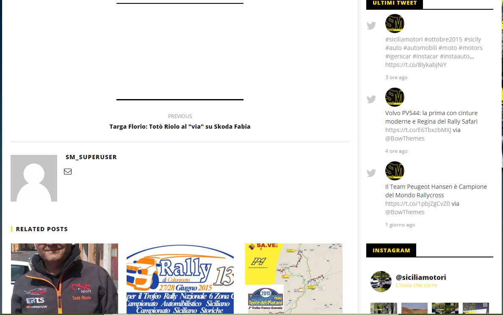
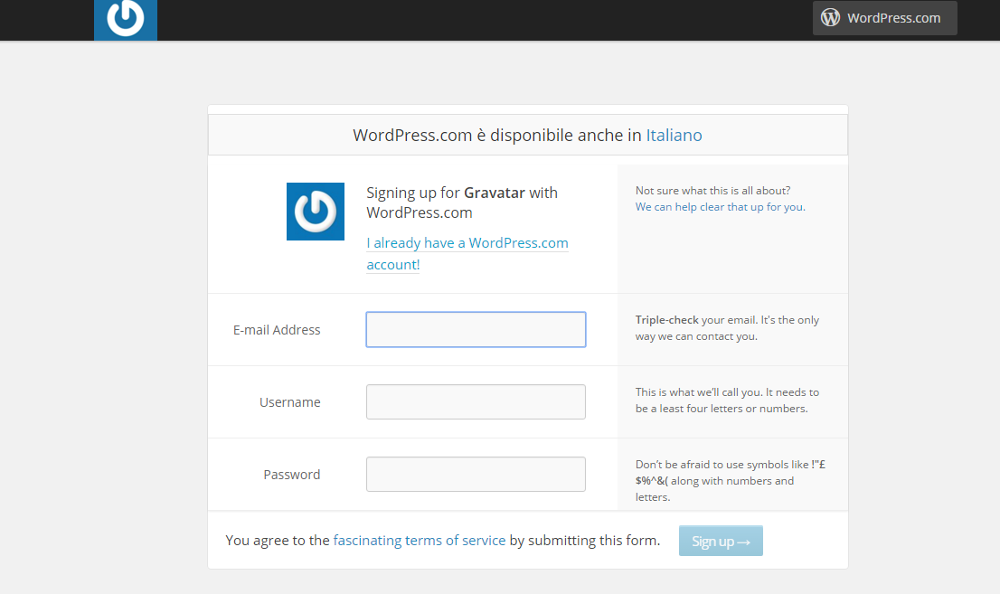

Una volta Loggati all'interno del sito dovrete modificare il vostro profilo per non incorrere in situazioni del genere
Infatti dopo avere scritto un articolo nel sito, in fondo all'articolo spunterà una piccola bio dell'autore e capite bene come sia diverso l'avere una foto e un profilo completo da avere solo uno spazio completamente vuoto sotto.
Per cambiare la vostra foto e inserire delle informazioni utili o dei semplici contatti, aprite il menu a tendina dove trovate il vostro nome e selezionate "modifica il tuo profilo" (1), vi si aprirà il backend del sito e in particolare la sezione dedicata al vostro profilo (2)
(1) (2)Da questa sezione potete modificare il colore del vostro backend scegliendo tra la gamma di colori proposta. Consiglio di inserire anche i vostri contatti (se li avete) dei vari social in modo da poter avere un contatto maggiore con gli utenti. Per inserire un immagine di profilo la trafila e un po diversa. Dovete innanzitutto andare nel sito www.gravitar.com e cliccare su "create your own Gravatar" (1) e inserire la mail che usate per il sito (info,gambino,pennica, etc..) e inserire una vostra foto. Gravatar permette quindi di associare a quella mail una foto profilo che verrà usata per wordpress
(1) (2)